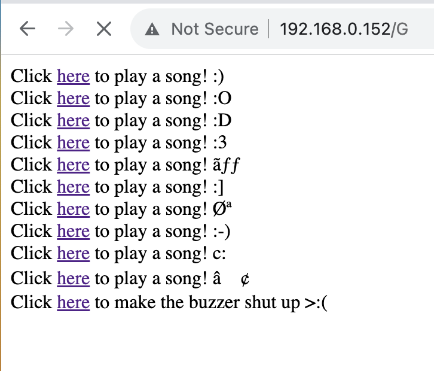

<br>
#### Week 9: Radio, WiFi, and Bluetooth
Our assignment this week was to pick a method of wireless communication to utilize in Arduino coding. We learned about Radio, API, and other cool and complicated methods, but my partner Clarissa and I decided to stick with LAN. We made this decision because we felt like it would be manageable under a time crunch and allow us some room to make something complete and unique.
So, we altered the LAN example we were given in class- the one that turns an LED on and off -and decided to make it one that could turn a piezo buzzer on and off. We came up with the idea to have multiple buttons that allowed users to play multiple different songs on the buzzer... But it was late at night, we were both exhausted and feeling a little silly... So we made it so where one button played the "Game of Thrones" theme, and all the others played "Never Gonna Give You Up."
The whole exercise was a really good rundown in how to "Frankenstein" together existing code that I or others have made before in order to make something new. As a novice coder, I feel like it helped me reach a new level of fluency I didn't have before. Major shoutout to Carissa for not only being a great collaborator, but for mentoring me and my coding skills.
If you told me, when I was accepted to HGSE in March 2023, that I would be using my time to code a Rickroll for a class of undergraduate engineers, I would have raised an eyebrow. But it was awesome. Too bad that was the day Nathan was out of town for a conference!
Below shows the interface that users were interacting with to make it play, in addition to the code.

<pre>
<code>
/*
This code is built off of the "WiFi Web Server LED Blink" sketch
created for arduino 25 Nov 2012
by Tom Igoe
ported for sparkfun esp32
31.01.2017 by Jan Hendrik Berlin
Music transcriptions were taken from:
https://github.com/robsoncouto/arduino-songs/blob/master/gameofthrones/gameofthrones.ino
https://projecthub.arduino.cc/rowan07/rickroll-piezo-buzzer-b3d9fd
*/
#include <WiFi.h>
const char* ssid = "MAKERSPACE";
const char* password = "12345678";
// define all our notes
#define NOTE_B0 31
#define NOTE_C1 33
#define NOTE_CS1 35
#define NOTE_D1 37
#define NOTE_DS1 39
#define NOTE_E1 41
#define NOTE_F1 44
#define NOTE_FS1 46
#define NOTE_G1 49
#define NOTE_GS1 52
#define NOTE_A1 55
#define NOTE_AS1 58
#define NOTE_B1 62
#define NOTE_C2 65
#define NOTE_CS2 69
#define NOTE_D2 73
#define NOTE_DS2 78
#define NOTE_E2 82
#define NOTE_F2 87
#define NOTE_FS2 93
#define NOTE_G2 98
#define NOTE_GS2 104
#define NOTE_A2 110
#define NOTE_AS2 117
#define NOTE_B2 123
#define NOTE_C3 131
#define NOTE_CS3 139
#define NOTE_D3 147
#define NOTE_DS3 156
#define NOTE_E3 165
#define NOTE_F3 175
#define NOTE_FS3 185
#define NOTE_G3 196
#define NOTE_GS3 208
#define NOTE_A3 220
#define NOTE_AS3 233
#define NOTE_B3 247
#define NOTE_C4 262
#define NOTE_CS4 277
#define NOTE_D4 294
#define NOTE_DS4 311
#define NOTE_E4 330
#define NOTE_F4 349
#define NOTE_FS4 370
#define NOTE_G4 392
#define NOTE_GS4 415
#define NOTE_A4 440
#define NOTE_AS4 466
#define NOTE_B4 494
#define NOTE_C5 523
#define NOTE_CS5 554
#define NOTE_D5 587
#define NOTE_DS5 622
#define NOTE_E5 659
#define NOTE_F5 698
#define NOTE_FS5 740
#define NOTE_G5 784
#define NOTE_GS5 831
#define NOTE_A5 880
#define NOTE_AS5 932
#define NOTE_B5 988
#define NOTE_C6 1047
#define NOTE_CS6 1109
#define NOTE_D6 1175
#define NOTE_DS6 1245
#define NOTE_E6 1319
#define NOTE_F6 1397
#define NOTE_FS6 1480
#define NOTE_G6 1568
#define NOTE_GS6 1661
#define NOTE_A6 1760
#define NOTE_AS6 1865
#define NOTE_B6 1976
#define NOTE_C7 2093
#define NOTE_CS7 2217
#define NOTE_D7 2349
#define NOTE_DS7 2489
#define NOTE_E7 2637
#define NOTE_F7 2794
#define NOTE_FS7 2960
#define NOTE_G7 3136
#define NOTE_GS7 3322
#define NOTE_A7 3520
#define NOTE_AS7 3729
#define NOTE_B7 3951
#define NOTE_C8 4186
#define NOTE_CS8 4435
#define NOTE_D8 4699
#define NOTE_DS8 4978
#define REST 0
// infrastructure for song 1
// change this to make the song slower or faster
int tempo = 90;
// change this to whichever pin you want to use
int buzzer = 7;
// infrastructure for song 2
volatile int beatlength = 100; // determines tempo
float beatseparationconstant = 0.3;
int threshold;
int a; // part index
int b; // song index
bool flag;
// transcription for song 1: Game of Thrones
// notes of the moledy followed by the duration.
// a 4 means a quarter note, 8 an eighteenth , 16 sixteenth, so on
// !!negative numbers are used to represent dotted notes,
// so -4 means a dotted quarter note, that is, a quarter plus an eighteenth!!
int gameOfThrones[] = {
// Game of Thrones
// Score available at https://musescore.com/user/8407786/scores/2156716
NOTE_G4,8, NOTE_C4,8, NOTE_DS4,16, NOTE_F4,16, NOTE_G4,8, NOTE_C4,8, NOTE_DS4,16, NOTE_F4,16, //1
NOTE_G4,8, NOTE_C4,8, NOTE_DS4,16, NOTE_F4,16, NOTE_G4,8, NOTE_C4,8, NOTE_DS4,16, NOTE_F4,16,
NOTE_G4,8, NOTE_C4,8, NOTE_E4,16, NOTE_F4,16, NOTE_G4,8, NOTE_C4,8, NOTE_E4,16, NOTE_F4,16,
NOTE_G4,8, NOTE_C4,8, NOTE_E4,16, NOTE_F4,16, NOTE_G4,8, NOTE_C4,8, NOTE_E4,16, NOTE_F4,16,
NOTE_G4,-4, NOTE_C4,-4,//5
NOTE_DS4,16, NOTE_F4,16, NOTE_G4,4, NOTE_C4,4, NOTE_DS4,16, NOTE_F4,16, //6
NOTE_D4,-1, //7 and 8
NOTE_F4,-4, NOTE_AS3,-4,
NOTE_DS4,16, NOTE_D4,16, NOTE_F4,4, NOTE_AS3,-4,
NOTE_DS4,16, NOTE_D4,16, NOTE_C4,-1, //11 and 12
//repeats from 5
NOTE_G4,-4, NOTE_C4,-4,//5
NOTE_DS4,16, NOTE_F4,16, NOTE_G4,4, NOTE_C4,4, NOTE_DS4,16, NOTE_F4,16, //6
NOTE_D4,-1, //7 and 8
NOTE_F4,-4, NOTE_AS3,-4,
NOTE_DS4,16, NOTE_D4,16, NOTE_F4,4, NOTE_AS3,-4,
NOTE_DS4,16, NOTE_D4,16, NOTE_C4,-1, //11 and 12
NOTE_G4,-4, NOTE_C4,-4,
NOTE_DS4,16, NOTE_F4,16, NOTE_G4,4, NOTE_C4,4, NOTE_DS4,16, NOTE_F4,16,
NOTE_D4,-2,//15
NOTE_F4,-4, NOTE_AS3,-4,
NOTE_D4,-8, NOTE_DS4,-8, NOTE_D4,-8, NOTE_AS3,-8,
NOTE_C4,-1,
NOTE_C5,-2,
NOTE_AS4,-2,
NOTE_C4,-2,
NOTE_G4,-2,
NOTE_DS4,-2,
NOTE_DS4,-4, NOTE_F4,-4,
NOTE_G4,-1,
NOTE_C5,-2,//28
NOTE_AS4,-2,
NOTE_C4,-2,
NOTE_G4,-2,
NOTE_DS4,-2,
NOTE_DS4,-4, NOTE_D4,-4,
NOTE_C5,8, NOTE_G4,8, NOTE_GS4,16, NOTE_AS4,16, NOTE_C5,8, NOTE_G4,8, NOTE_GS4,16, NOTE_AS4,16,
NOTE_C5,8, NOTE_G4,8, NOTE_GS4,16, NOTE_AS4,16, NOTE_C5,8, NOTE_G4,8, NOTE_GS4,16, NOTE_AS4,16,
REST,4, NOTE_GS5,16, NOTE_AS5,16, NOTE_C6,8, NOTE_G5,8, NOTE_GS5,16, NOTE_AS5,16,
NOTE_C6,8, NOTE_G5,16, NOTE_GS5,16, NOTE_AS5,16, NOTE_C6,8, NOTE_G5,8, NOTE_GS5,16, NOTE_AS5,16,
};
// sizeof gives the number of bytes, each int value is composed of two bytes (16 bits)
// there are two values per note (pitch and duration), so for each note there are four bytes
int notes = sizeof(gameOfThrones) / sizeof(gameOfThrones[0]) / 2;
// this calculates the duration of a whole note in ms
int wholenote = (60000 * 4) / tempo;
int divider = 0, noteDuration = 0;
// transcription for song 2: Never Gonna Give You Up (Chorus)
// divided into notes and rhythm
int song2_melody[] =
{ NOTE_AS4, NOTE_AS4, NOTE_GS4, NOTE_GS4,
NOTE_F5, NOTE_F5, NOTE_DS5, NOTE_AS4, NOTE_AS4, NOTE_GS4, NOTE_GS4, NOTE_DS5, NOTE_DS5, NOTE_CS5, NOTE_C5, NOTE_AS4,
NOTE_CS5, NOTE_CS5, NOTE_CS5, NOTE_CS5,
NOTE_CS5, NOTE_DS5, NOTE_C5, NOTE_AS4, NOTE_GS4, NOTE_GS4, NOTE_GS4, NOTE_DS5, NOTE_CS5,
NOTE_AS4, NOTE_AS4, NOTE_GS4, NOTE_GS4,
NOTE_F5, NOTE_F5, NOTE_DS5, NOTE_AS4, NOTE_AS4, NOTE_GS4, NOTE_GS4, NOTE_GS4, NOTE_C5, NOTE_CS5, NOTE_C5, NOTE_AS4,
NOTE_CS5, NOTE_CS5, NOTE_CS5, NOTE_CS5,
NOTE_CS5, NOTE_DS5, NOTE_C5, NOTE_AS4, NOTE_GS4, REST, NOTE_GS4, NOTE_DS5, NOTE_CS5, REST
};
int song2_rhythm[] =
{ 1, 1, 1, 1,
3, 3, 6, 1, 1, 1, 1, 3, 3, 3, 1, 2,
1, 1, 1, 1,
3, 3, 3, 1, 2, 2, 2, 4, 8,
1, 1, 1, 1,
3, 3, 6, 1, 1, 1, 1, 3, 3, 3, 1, 2,
1, 1, 1, 1,
3, 3, 3, 1, 2, 2, 2, 4, 8, 4
};
WiFiServer server(80);
void setup()
{
Serial.begin(115200);
pinMode(5, OUTPUT); // set the LED pin mode
// initialize song 2 vars
a = 1;
b = 0;
flag = false;
delay(10);
// We start by connecting to a WiFi network
Serial.println();
Serial.println();
Serial.print("Connecting to ");
Serial.println(ssid);
WiFi.begin(ssid, password);
while (WiFi.status() != WL_CONNECTED) {
delay(500);
Serial.print(".");
}
Serial.println("");
Serial.println("WiFi connected.");
Serial.println("IP address: ");
Serial.println(WiFi.localIP());
server.begin();
}
void loop(){
WiFiClient client = server.available(); // listen for incoming clients
if (client) { // if you get a client,
Serial.println("New Client."); // print a message out the serial port
String currentLine = ""; // make a String to hold incoming data from the client
while (client.connected()) { // loop while the client's connected
if (client.available()) { // if there's bytes to read from the client,
char c = client.read(); // read a byte, then
Serial.write(c); // print it out the serial monitor
if (c == '\n') { // if the byte is a newline character
// if the current line is blank, you got two newline characters in a row.
// that's the end of the client HTTP request, so send a response:
if (currentLine.length() == 0) {
// HTTP headers always start with a response code (e.g. HTTP/1.1 200 OK)
// and a content-type so the client knows what's coming, then a blank line:
client.println("HTTP/1.1 200 OK");
client.println("Content-type:text/html");
client.println();
Serial.println("debug");
// the content of the HTTP response follows the header:
client.print("Click <a href=\"/R\">here</a> to play a song! :)<br>");
client.print("Click <a href=\"/R\">here</a> to play a song! :O<br>");
client.print("Click <a href=\"/R\">here</a> to play a song! :D<br>");
client.print("Click <a href=\"/R\">here</a> to play a song! :3<br>");
client.print("Click <a href=\"/R\">here</a> to play a song! ッ<br>");
client.print("Click <a href=\"/G\">here</a> to play a song! :]<br>");
client.print("Click <a href=\"/R\">here</a> to play a song! ت<br>");
client.print("Click <a href=\"/R\">here</a> to play a song! :-)<br>");
client.print("Click <a href=\"/R\">here</a> to play a song! c:<br>");
client.print("Click <a href=\"/R\">here</a> to play a song! ⍢<br>");
client.print("Click <a href=\"/L\">here</a> to make the buzzer shut up >:(<br>");
// The HTTP response ends with another blank line:
client.println();
// break out of the while loop:
break;
} else { // if you got a newline, then clear currentLine:
currentLine = "";
}
} else if (c != '\r') { // if you got anything else but a carriage return character,
currentLine += c; // add it to the end of the currentLine
}
// Check to see if the client request was "GET /G" or "GET /R" or "GET /L":
if (currentLine.endsWith("GET /G")) {
// iterate over the notes of the melody.
// Remember, the array is twice the number of notes (notes + durations)
for (int thisNote = 0; thisNote < notes * 2; thisNote = thisNote + 2) {
// calculates the duration of each note
divider = gameOfThrones[thisNote + 1];
if (divider > 0) {
// regular note, just proceed
noteDuration = (wholenote) / divider;
} else if (divider < 0) {
// dotted notes are represented with negative durations!!
noteDuration = (wholenote) / abs(divider);
noteDuration *= 1.5; // increases the duration in half for dotted notes
}
// we only play the note for 90% of the duration, leaving 10% as a pause
tone(buzzer, gameOfThrones[thisNote], noteDuration * 0.9);
// Wait for the specief duration before playing the next note.
delay(noteDuration);
// stop the waveform generation before the next note.
noTone(buzzer);
}
}
if (currentLine.endsWith("GET /R")) {
// play NGGYU chorus
flag = true;
while(flag){
int notelength;
if (a == 1) {
// chorus
notelength = beatlength * song2_rhythm[b];
if (song2_melody[b] > 0) {
tone(buzzer, song2_melody[b], notelength);
}
b++;
if (b >= sizeof(song2_melody) / sizeof(int)) {
a++;
b = 0;
Serial.println("checkpoint 1");
}
}
delay(notelength);
noTone(buzzer);
delay(notelength * beatseparationconstant);
if (a == 2) { // loop back around to beginning of song
Serial.println("checkpoint 2");
flag = false;
break;
}
}
if (currentLine.endsWith("GET /L")) {
// don't play anything
noTone(buzzer); // GET /L turns the buzzer off
}
}
}
}
// close the connection:
client.stop();
Serial.println("Client Disconnected.");
}
}
</code>
</pre>